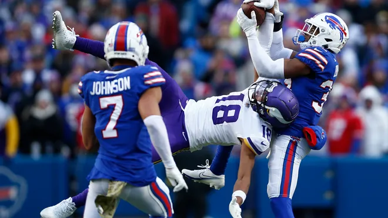
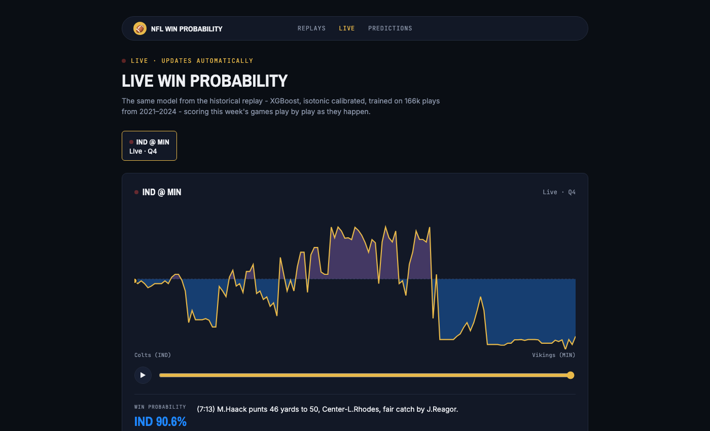
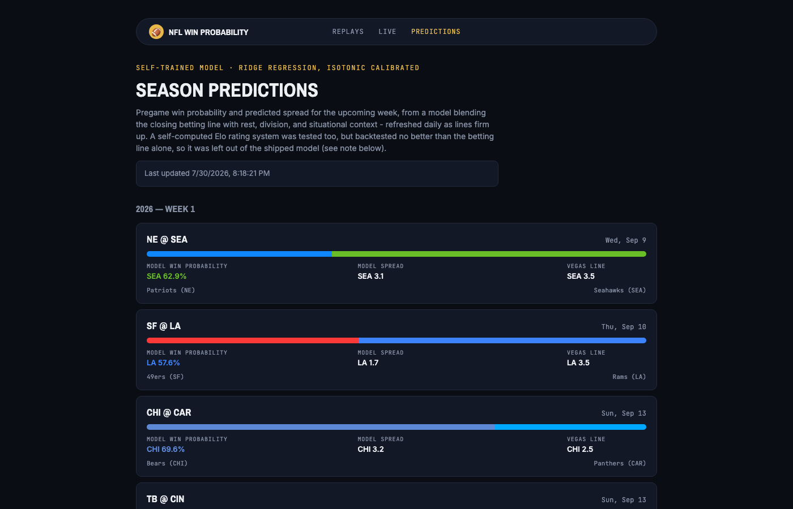

Two models · trained from scratch · results published as-is
One model reads a live game state and says how likely each team is to win right now. A completely different model reads a matchup before kickoff and says who's likely to win before a snap is played. Both are built from scratch, and both pages below show their real, honestly-reported performance — including where they don't beat the obvious baseline.

Scrub play-by-play through five of the most dramatic games from the last four seasons, watching win probability swing in real time.

The same in-game model, scoring real 2026-season games as they're actually being played from ESPN's live feed.

A different model predicting win probability and point spread for next week's games before kickoff, shown next to the Vegas line.
Both models, their training pipelines, and their evaluation results are open in the repo — including the parts that didn't work (see the "left out of the shipped model" note above). Nothing here is optimized to look better than it actually performed.